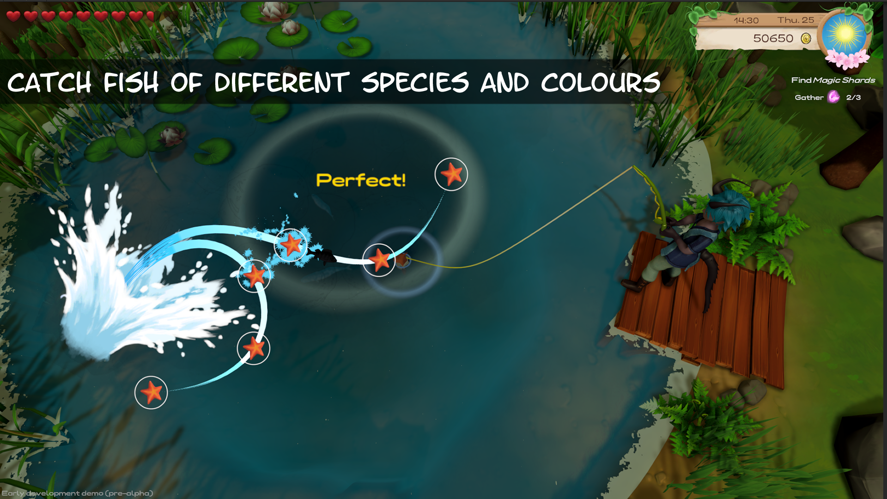

March 15, 2022 – Steam page and UI
Isa:
Our Steam page is up!
Wishlist and follow us on Steam! This helps us and the project!
Magical Harvest on Steam

News: Last weekend I finished a picture that can be used for our steampage for now. According to that I also finished the rough version of the steampage, but it still needs to be filled with life. But the most important information is there for now (I hope - I'm open for suggestions!). Feel free to get in touch in Discord in our channel!).
UI: I've also started the process of revamping the UI. The placeholder UI is not very nice to look at and with a new UI the game feels completely different.
But I'm amazed at how much time this is taking! It took me almost a whole day just for the toolbar! It's not finished yet either, as some elements aren't optimal yet, but it's definitely more worth seeing than before (which isn't hard).
 Fish and "Shinies":
On the side, Marie continues to make fish to fill the fishing game with. There is also a special feature in our game that we decided
to add this week:
Fish and "Shinies":
On the side, Marie continues to make fish to fill the fishing game with. There is also a special feature in our game that we decided
to add this week: Special fish colors (equivalent to the Shinies in Pokémon). To make fishing feel even more meaningful, after all, these can then be viewed in the fish book.
What next?: My goal this week and next is to visually spruce up the game a bit.
This includes the UI, the game environment (Environment) and the fishing game would also like effects.
I'm still missing the wheat for the summer crops, and I won't continue with these 3D models until April, since the visual part has top priority right now.
March 08, 2022 - The adventure begins - or is already in full swing...
 Isa:
Isa:
This blog post is getting a bit longer as I summarize our journey of about 4 months. In the future, shorter, 2-weekly updates will occur to report the progress.
We started planning Magical Harvest in early November 2021. November and December consisted more of testing and trying out from a programmer's point of view,
while on the side the concept phase for the first game elements progressed.
Programming of the first content:
In January, the actual programming work began. Unfortunately, it is not possible to start immediately with features that are directly visible to the player.
First of all, a data management system had to be created to handle all the items in the game and to be able to integrate them easily into the game.
This was followed by the creation of the inventory system and the grid system, since the main player action is based on them.
Before that and also in between, the day-night system was added, a calendar, the player's stamina - things that run alongside in the game.
Also, the first interacting with farm tiles to sow seeds, water plants and be able to harvest them.
Decorating and fishing:

In February I focused mainly on the decorating mode, since it is based on the game grid and much depends on the logic behind it. Now you can decorate the farm (and the player house) after all!
Then 2 weeks ago I replaced the placeholder character I had been using until then. After 5 days of learning how to create 3D characters, I created a more nicer looking test player character.
After that I started to implement the fishing minigame, which I will finish this week. At least in the rough version.
Assets:
Everything I'm currently doing needs to be spruced up, of course. Sound effects, more animations, UI, real 3D assets - all that is missing.
The current assets are 95% placeholders. So all the game objects and the user interface.
We are not professional 3D artists and still need someone for this role, nevertheless we try to create some assets ourselves to be able to show
a preliminary, rough direction of the game. For example, I'm already creating the first crops and because of our system that's quite a few!
Not much in 3 months, right?: Yes and no. It doesn't look like much, but next du the current "finished" game-features is more:
Making the homepage, preparing the Steam-page, learning and implementing 3D-modeling and texturing, planning the game, creating concepts (written and art),
planning the story and characters... and more.
 Time allocation? :
I program around 40% of my working day on the game (and I work around 10-12h/day on it), around 45% art, concept or other, and around 5% social media (tendency increasing here).
We're hoping for a successful Kickstarter campaign in fall to at least be able to hire artists.
Time allocation? :
I program around 40% of my working day on the game (and I work around 10-12h/day on it), around 45% art, concept or other, and around 5% social media (tendency increasing here).
We're hoping for a successful Kickstarter campaign in fall to at least be able to hire artists.
Next:
This week I will finish programming the fishing minigame, as far as it is possible in the current state of the game.
This includes painting a few more 2D icons for the fish and the preliminary fishing rod. Along the way, my goal is to
finish creating the 3D models for the summer field crops.
The next blog entry will already be next week, as the long term plan is to write a blog at the beginning of a month and the middle of a month.